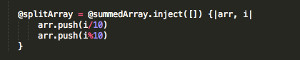
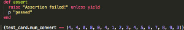
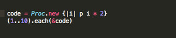
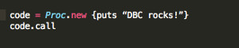
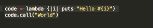

Blocks and Procs and Lambdas - Oh My!
October 3, 2014
This week I'll provide a quick but hopefully informational overview about Blocs, Procs, and Lambdas, and how they are useful in Ruby. All three of these are ways of grouping code together to use as a unit. Another name for this is Closures.
Blocks
A block of code is simply a piece of code that we want to run under certain circumstances. Every time we iterate through an array using the .inject method, or we write an assert statement using yield, we use a code block to isolate the statement or statements we want to pass to the method.
 Notice how the block begins and ends with a set of curly brackets.
Procs
A Proc is a way of creating a shorthand way to refer to a code block. It's actually a class in Ruby, but it's helpful to think of a proc object as a variable whose value is set to a block of code that we want to reuse.
The code above shows a very simple example of how we might use a proc object to interate through a range of numbers double them, printing the output. The syntax is very similar to how we would use a block with an each statement, but notice how we've created a variable to hold the code. We then create a new proc object by calling the new method on it. To invoke the proc, we pass it in as a parameter to the each method. Note that we must use the ampersand to denote the proc.
We can also define a Proc, as above, but then invoke it using the .call method. Since it's an object, we can call methods on it.
Lambdas
The differences between Procs and Lambdas are subtle. So subtle, in fact, that it's really hard to figure out what they are. A Lambda is actually a type of proc object. The behavior and functionality is similar. The main differences between the two are the way that they handle arguments and returns. A Lambda will produce an error if the number of arguments its passed differs from the number given when it was defined. This won't happen with a Proc object. Secondly, Lambdas allow multiple return statements, whereas a Proc will terminate the first time it encounters a return. Below is an example of how we might use a Lambda. Note the similarities in syntax and functionality between the example and the Proc example above.
